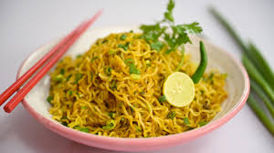

This is one of the most popular and easiest recipes among students. It takes very little time and always tastes delicious.

Preparation Time: 3 minutes
Difficulty Level: Very Easy
Best For: Quick Meal / Night Study Snack